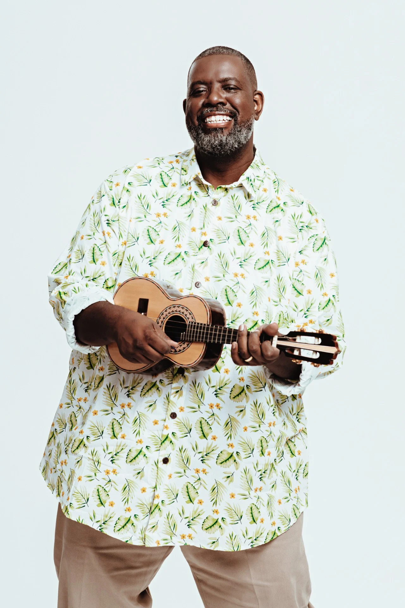

Boas-vindas ao
Quero conhecer!O que foi o Samba?
O samba é um gênero musical e uma dança popular brasileira, com raízes na cultura
africana e influências europeias. Originário do Rio de Janeiro, o samba se tornou uma das
expressões culturais mais importantes do Brasil, com diversas variantes e estilos.
Fonte: Brasil Escola - Visitar o site
Galeria
